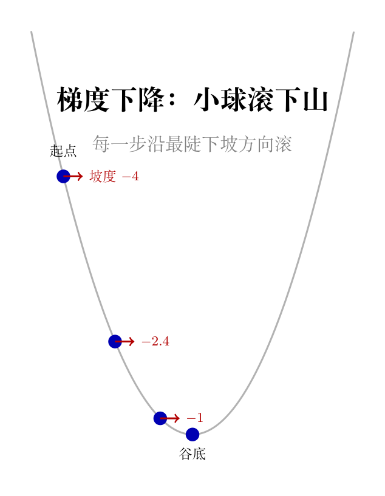

不是说「学习率大了就会跨过山谷」——要多大才会跨过去？用二次函数来算。
拿一个具体例子：$f(x) = x^2 - 4x + 4$，导数 $f'(x) = 2x - 4$（斜率是一条直线），最小值在 $x=2$（因为 $f'(2)=0$）。
梯度下降更新：
$$x_{t+1} = x_t - \eta \cdot (2x_t - 4) = (1 - 2\eta) x_t + 4\eta$$关心的是离谷底还有多远：定义误差 $e_t = x_t - 2$（当前离最小值 2 的距离）。
$$e_{t+1} = x_{t+1} - 2 = (1-2\eta)x_t + 4\eta - 2 = (1-2\eta)(x_t - 2) = (1-2\eta) \cdot e_t$$所以每一步误差乘以 $(1-2\eta)$：
验证：$\eta = 1.5$，$1-2\eta = 1-3 = -2$，$|{-2}| = 2 > 1$ → 发散。
$x_0 = 1$，误差 $e_0 = 1-2 = -1$（谷底在右边）。$e_1 = (-2) \times (-1) = 2$，$|e_1| = 2 > |e_0| = 1$。直接验证：$x_1 = 1 - 1.5 \times (-2) = 1 + 3 = 4$，确实从谷底左边直接跳到右边更远的地方——典型的发散。
一般结论：对于二次函数 $f(x) = ax^2 + bx + c$（其中 $a>0$，开口朝上），收敛条件是 $0 < \eta < 1/a$。$f''(x) = 2a$ 越大（函数越弯），允许的学习率越小。
